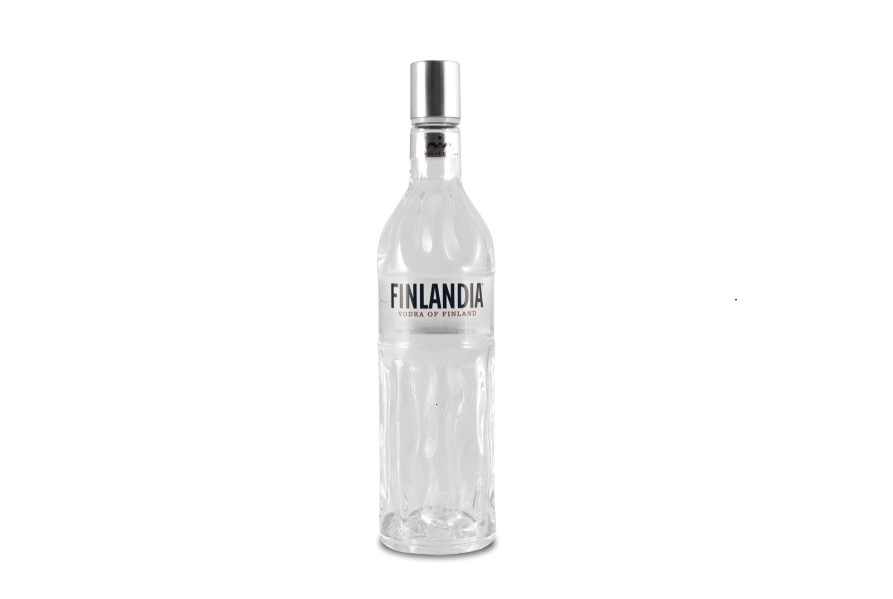
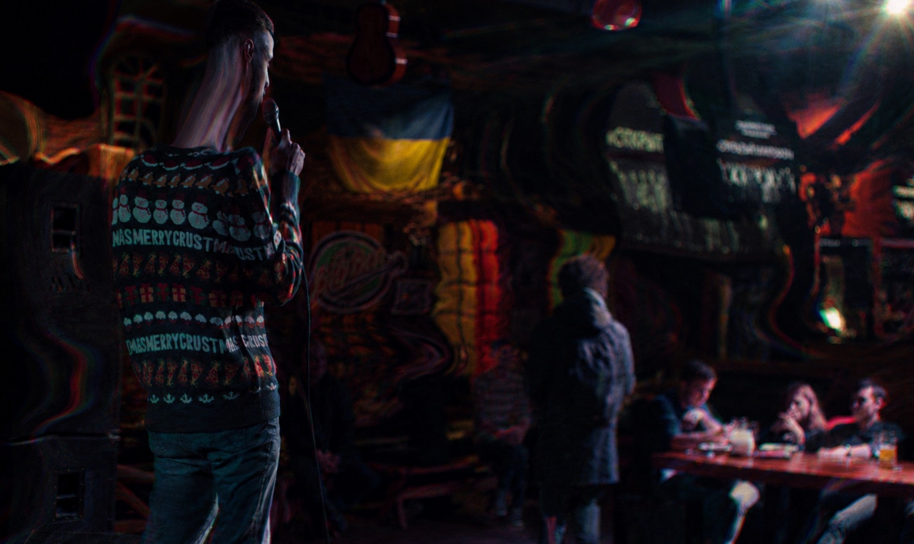

За рік Саша спитає мене, чому я не пішов воювати за свій Майдан. Я й сам до пуття не знав, що відповісти; наприклад, я жодного разу в житті не тримав у руках зброї, на що він упевнено заперечив, що це не проблема: «жить захочешь - научишься». Сам Саша пішов воювати за республіку одразу після «референдуму», одним із перших, без тіні сумніву. Якийсь час ми підтримували зв'язок, я страшенно сумував, між нами було щось таке, чого нічим не заміниш, іноді я писав йому, коли напивався, але за кілька років перестав. Я не надто засуджував його вибір, проте не тому, що «не все так однозначно»; ні, просто іноді важко брати на себе роль морального камертона, особливо коли так добре знаєш чиїсь мотиви. Усіма нами керує воля випадку або, як стверджують буддисти, причинно-наслідкові зв'язки.
Щодо Сашиного «вибору», то мого друга скалічили злидні й тісна хрущовка, де йому доводилося все життя ділити маленьку кімнату зі старшим братом; утім, усі ми ділили свої тісні кімнати з родичами, не знаю, можливо, його скалічило щось іще, наприклад робота на шахті, яку він ненавидів і вважав безальтернативною, або служба в армії, після якої він повернувся трохи здичавілим.
І так далі, я міг би написати цілу трагедію про те, як токсичне середовище поступово перетворює шанувальника Кафки на шанувальника Путіна, але не цього разу. Просто констатую, що Саша зненавидів Кафку в самому собі; усе чуттєве, світле й поетичне заважало йому спускатися під землю, на проходку, спілкуватися з вовками - так він називав досвідчених шахтарів, - уся ця чутливість заважала йому боротися за виживання, тому він і вирішив пристати на бік сили; принаймні так йому здавалося тієї миті. Якщо бути до кінця відвертим, я навіть трохи заздрив його вірі в рашизм. Бути атеїстом складно: якщо не віриш ні в що небесне, мусиш вибирати сторону на землі, сторону сильного чи слабкого, гнобителя чи жертви, коротше кажучи, мусиш обирати місце в цій нескінченній і безглуздій війні, яку заведено називати еволюцією.
У свої двадцять три я був політично безграмотним і навряд чи готовим віддати життя «за Майдан»; для мене вибір між Україною та ДНР був очевидним з естетичного погляду, я обирав бік красивих і не розумів, що може єднати мене з людьми в бежевих рибальських бриджах і кросівках Abibas; вони погано пахли й слухали шансон, пов'язати мене з цим прошарком суспільства могла хіба що любов до начальства, але й тут наші шляхи розходилися.
У вечірньому випуску новин диктори повідомили, що «хода за Україну закінчилася бійкою з сепаратистами», тут-таки за роботу взялися росіяни, змонтували ролики з нашого мітингу й пустили інтернетом із підписами «нацистский марш в Донецке», «марш бандеровцев» тощо, де серед іншого миготів і я, у футболці «ВОЛЯ АБО СМЕРТЬ», серед авангарду, що розмахував фаєрами.
Уже наступного дня я поголив голову налисо, закинув до рюкзака кілька пачок антидепресантів, сів в автобус і поїхав у бік села «Красний Партизан», на нашу фазенду, рай на землі, де бабуся, яка не знає втоми, завжди забезпечить тобі абсолютно незаслужений рівень комфорту.
Насамперед мене цікавила безпека; я відчував, що скоро почнеться полювання на недобитих нацистів, і всіх, хто потрапив на відео, рано чи пізно ідентифікують та відправлять на перевиховання. Можливо, я перебільшував, але те, що ми програли битву за Донецьк, було очевидно. Готельно-ресторанний бізнес вимер, сидіти без роботи й чекати відправки «на підвал» я не хотів, мені треба було змінити обстановку й подумати про майбутнє.
Приїхавши на дачу, я впав в анабіоз, без алкоголю мені постійно хотілося спати, але заснути як слід не міг, просто цілими днями крутився на старому дачному матраці. Моє «каліфорнійське ракетне паливо» не заводило двигун без спирту, здавалося б, чудова нагода замислитися над ефективністю такого лікування, терапевтична схема, до якої треба додавати спирт, мала б щонайменше насторожити, але ні, я був надто дурний і надто голодний до задоволень; кілька днів поспіль майже не виходив із кімнати, а коли бабуся почала перейматися моїм здоров'ям, не придумав нічого кращого, ніж попросити в неї пляшку самогону. Звісно, Ромочко, є пшеничний і смородиновий, можу ще абрикосовий пошукати. Я вибрав пів літра смородинового, він був найароматніший, точніше, ароматними були всі, але не всі аромати здавалися безпечними, тож я забрав смородинове пійло, налите в півлітрову пляшку з-під кока-коли, і почав потроху вибиратися на білий світ.
Я сидів біля багаття або гуляв околицями, вздовж пшеничних і соняшникових полів, або спускався нижче, на луг до маленької річечки Кривий Торець, де ми з братом виловили не одну сотню окунів; тут пастухи із села двічі на день пасли корів, усе було всіяне їхніми коржами, навколо літала незліченна кількість мошок, мух, ґедзів, але саме тут минуло моє щасливе дитинство - мухи й коров'ячі коржі відлякували батька, він рідко приїздив на дачу, вважаючи її недостатньо інтелігентною для такого тонкого й чутливого філолога, і щоразу, коли приїздив, обурювався й ставив за приклад Румунію, де в його родичів на дачах немає ані мух, ані коржів, усі будинки вкриті не шифером, а шляхетною черепицею, люди там відпочивають, а не горбатяться на городі, і так далі й тому подібне. Бабуся й дідусь мовчки слухали його ниття, фантастичний рівень самоконтролю! Вони знали, що він займається домашнім насильством, п'є частіше за нормальних людей, а згодом утнеться в невдалу фінансову авантюру й прирече всю сім'ю вічно жити по орендованих квартирах; і все це з розумним виглядом, жодного каяття, тільки злість і невдоволення мухами на дачі, з любов'ю збудованій дідовими руками. Загалом, навідувався він туди нечасто, тож у мене випадала рідкісна нагода провести літні канікули без його істерик.
Засідаючи у дворі зі смородиновим самогоном, я фантазував про те, як вступлю до батальйону «Донбас» і винищуватиму сепаратистів разом зі славним Семеном Семенченком. Я не дуже розумів, як туди потрапити, не надто вірив, що мене, без досвіду служби, візьмуть, та й узагалі не хотів їхати туди сам. Друзі мої войовничістю не вирізнялися, з друзями мені пощастило - суцільна розсудливість і адекватність, вони навіть пили неохоче, вічно доводилося їх умовляти, - єдиним, на чиє божевілля я міг розраховувати, був мій брат; за тиждень він привіз мені кілька пакетів м'яса для мангала, ми мовчки сиділи біля вогню, пили самогон, і коли я показав йому добірку відео із Семенченком, то побачив у його очах той азарт, із яким він зазвичай наважувався на дурниці.
У нас було бурхливе дитинство, нас єднали шрами від падінь із велосипедів, биття вікон, вуличні розбірки та інше дрібне хуліганство, тож опинитися з ним на фронтирі здавалося мені найлогічнішим продовженням братньої любові; але азарт його був швидкоплинним, очі швидко згасли, або, точніше, протверезіли. Брат уже встиг подорослішати, стати цинічнішим, і поки я за баром збивав молочні коктейлі, він ходив кабінетами міської адміністрації та організовував міжнародні спортивні заходи, керував великими процесами й навіть плекав надію, що справжньої війни не буде і він продовжить займатися своїми справами.
Наступного дня брат повернувся до Донецька, а я продовжив сидіти біля мангала й колупати вугілля довгим залізним прутом, підливаючи самогону в чарку; очевидно, настав час рухатися далі, ухвалювати рішення, але я чогось чекав, мені потрібен був якийсь поштовх, знак згори, ні, не знак, дурниці, який іще знак? Натхнення - ось чого я насправді потребував. Люди діляться на тих, кому натхнення не потрібне, і тих, хто шукає його навіть у самогоні. Бабуся належала до першої категорії - вона прокидалася на світанку й копала, підв'язувала, сіяла, носила й поливала до самого заходу сонця, щодня, без вихідних, без відпусток, без лікарняних, господи, та вона навіть телевізор не дивилася, звідки в однієї людини може бути стільки волі? Ось у чому криється справжня нерівність, у бажанні жити, поки живий, ну або принаймні діяти, бачити сенс у всіх цих помідорах.
Приблизно так я міркував, безцільно сидячи на лавці у дворі, у затінку бунгало; бабуся проходила повз, кинула іронічний погляд на напівпорожню пляшку й похитала головою: «ти вже прям як папочка…».
Так я й отримав своє довгоочікуване натхнення - наче удар палицею по маківці від дзен-учителя. Звісно, я розлютився, хіба можна критикувати онука, який збився зі шляху? На дачі я не чекав нічого, крім безумовної любові та прийняття, тому такий коментар застав мене зненацька, але вона мала рацію, через те я й образився; чекати невідомо чого, байдикувати, наливаючись синькою, поки навколо метушиться працьовита жінка, - це справді папочкин стиль.
Я хутко зібрався, як і належить ображеному, але залишалася ще одна справа, на яку я не наважувався, справа сумнівна, проте цікава - кілька тижнів тому я купив в інтернеті насіння конопель, сорт Tutankhamon, цей аутдор-гібрид із переважанням сативи (60 %) та невеликою домішкою індики (40 %) є справжнім фаворитом серед поціновувачів марихуани, забезпечуючи не лише потужний психоактивний ефект, а й вражаючий урожай.
Задум полягав у тому, щоб наприкінці літа зібрати добрячу жменю шишок і продати знайомому планокуру дешевше за ринок, я знав, почому він брав у бариг, і, головне, як часто брав, тож угода відбулася б без особливих труднощів, сам я не курив, ну гаразд, бувало й курив, але трава буквально зводила мене з розуму; подорослішавши, я полюблю ці пригоди, навчуся видобувати з них користь, що зробити, власне, не так уже й складно, треба просто замінити дволітрову пляшку з ковпаком на маленьку люльку, так, два літри диму за один вдих кого завгодно зведуть із глузду, якщо ти не пропалив собі мізки в студентських общагах, така доза не принесе тобі жодної радості; коротше, курити свої майбутні шишки я не збирався, на той момент мене цікавив лише комерційний складник куща.
Спочатку я думав посадити його потайки й навіть не казати бабусі, місця для кущів було хоч греблю гати, окрім нашого городу на кілька соток бабуся обробляла ще й сусідські, так би мовити, покинуті, ну й не тільки, дехто платив їй копійчину за послуги, а чому ні, більшості пенсіонерів було ліньки гарувати під палючим сонцем, коротше, я думав кинути насіння під чиїмось абрикосом і хай собі росте на дощовій воді, сорт outdoor передбачав живучість і невибагливість; але насправді в цьому не було жодної потреби, щось підказувало мені, що треба діяти відкрито.
Бабуся вислухала мій комерційний план із усмішкою й без заперечень, у неї не було часу вчити мене життя, та й навіщо, очевидно, гени взяли своє, папочкині нахили перемогли; вона забрала насіння й поклала його на мокру марлю, сказала, що перед тим, як кидати в землю, воно має прорости, а так жодних проблем, посаджу тут уздовж доріжки, ніхто не помітить.
За тиждень почався масовий вихід людей із Донецька, я був частиною масовки; дивовижна річ, коли всі, кого ти знаєш, їдуть в один бік мало не в одному вагоні, десятки людей, друзі, однокласники, однокурсники, знайомі, знайомі знайомих. На вечірній променад не завжди вдається домовитися, а тут - а давайте-но завтра всі поїдемо до Києва й будемо там орендувати квартири наступні двадцять років, чудова ідея, давайте, так, в'їзд у місто Стрєлкова зі своїми моторолами справив на людей приголомшливе враження.
У Києві нас ніхто не чекав, і знайти квартиру з донецькою пропискою було тим іще квестом, не всі хотіли селити «донецьких», звісно, це зачіпало, особливо коли розумієш, що ті «донецькі», яких вони боялися, до Києва не збиралися, вони або лишалися в народній республіці, або їхали в інший бік, на схід; затятих ватників серед переселенців було небагато.
Спочатку ми винайняли тимчасове житло й заїхали туди великою компанією, потім розбилися по парах і почали шукати окремі квартири; ну, я, звісно, нічого не шукав, цим займалися відповідальніші люди, насамперед я почав шукати, де мені виступити зі стендапом і з ким випити горілки. Загалом, до дорослого життя я був не готовий.
Поки тривали пошуки квартири, до Києва стягувалося дедалі більше знайомих, аж ось нас уже шестеро; після низки зустрічей із рієлторами, які я погано пам'ятаю, бо пити починав від самого ранку, я, Льоша й Макс, чиї особистісні характеристики постараюся описати згодом, опинилися на бульварі Лесі Українки, 7, у двокімнатній квартирі з прохідною кімнатою.
За кілька днів до нас заселився ще один біженець, Ярик, який не зміг знайти собі житло, потім заїхала Альона, подруга Фрола, потім підселився мій брат, у нього були якісь справи в міністерстві спорту, він привіз із Донецька літр бабусиного самогону, і ми з ним пішли у феноменальний запій, паралельно я шукав роботу за баром і вже знайшов собі місце в караоке-барі на Басейній; я виходив у нічні зміни, а вдень пив, це було абсолютне божевілля, ми спали вдвох на одному ліжку, спали на підлозі, спали по черзі. Льоша при цьому намагався працювати у прохідній кімнаті, він перевіз із собою стаціонарний комп'ютер із монітором і не міг просто піти до кав'ярні, прихопивши ноутбук, ноутбука в нього не було, доводилося займатися вебдизайном у компанії п'яних ідіотів.
Ярик теж пив пивко, а що ще робити без роботи, у якийсь момент пити почали всі, одного вечора Льоша плюнув на свій дизайн, я дістав мікрофон, під'єднав до комп'ютера, і ми записали реп-фристайл, кожен зачитав по куплету про нове життя в Києві, про гастроном, де ми купували пиво й пельмені, а також про згубний вплив російського світу, який позбавив нас дому. Так і закінчився той спекотний червень.
Я, до речі, не забув про свій стендап, десь між чарками й роботою мені вдалося знайти один відкритий мікрофон, він проходив у залі КПІ, усе було дуже урочисто, там було аж тринадцять коміків і справжній ведучий, вочевидь кавеенщик, але що поробиш, він тепло мене зустрів і поставив посеред списку; зала була порожнювата, але зо два десятки студентів набралося, я страшенно нервував, ще за годину до виступу запив коньяком дві таблетки гідазепаму, ми з групою підтримки влаштувалися на задньому ряду; коміки-початківці жартували так собі, але зал був теплий, студенти, звісно, не сміялися, зате аплодували, щоб не бентежити бідолашних артистів мертвою тишею. До мого виходу я висмоктав пів пляшки «Старого Кахеті», частина пролилася на штани, мене добряче розвезло, я ледве доплентався до сцени й сів на край, звісивши ноги перед першим рядом. «Простите, ребят, я посижу тут, чтоб вы не видели мое пятно на штанах», - почав я й одразу почув сміх, нарешті на сцену вийшов справжній клоун, коротше, виступ пройшов добре, мені довелося встати, щоб показати мініатюру «секс під рекламу», у всіх склалося враження, що я дуже впевнений, досвідчений комік, і за підсумками голосування я посів перше місце. Ведучий вручив мені білу футболку з принтом Дарта Вейдера, до чого тут Дарт Вейдер, я не зрозумів, футболка мені не сподобалася, але я вдягнув її замість просоченої стресовим потом кофти й того самого вечора благополучно залив рештками коньяку.
У липні все трохи владналося, у квартирі лишилося троє - я, Льоша й Макс. Хлопці нарешті видихнули, Льоші для щастя потрібна була тиша, а Максу - марихуана, тож у квартирі залишився тільки один алкоголік, але вдома я бував рідко; після хаотичних спроб попрацювати в центральних забігайлівках брат зателефонував знайомому шеф-кухареві й улаштував мене в хороший ресторан на Осокорках.
Наступний місяць можна сміливо назвати психологічним рабством, старший бармен Юра маніпулював мною, як недолюбленою дитиною, і я, як і належить жертві аб'юзу, був цьому тільки радий. Усе життя я бунтував проти авторитетів, хамив учителям, бився зі старшими, та що там, тиждень тому я витягнув свою зарплату з каси караоке-бару й мовчки пішов додому після того, як мені нахамила начальниця, але Юра знайшов до мене ключик, діяв тонко, без грубощів, для повного контролю було досить викликати в мені почуття сорому.
Невисокий, широкий, кремезний, із великими руками, коротше, орангутанг, але харизматичний, альфа-орангутанг, чимось нагадував мені Адріано Челентано або, радше, слідчого з районного РВВС, який одного разу ледь не розколов мене на допиті; коротше кажучи, я його боявся.
Від самого початку Юра дав зрозуміти, що я нічого не вмію й не годжуся для такого солідного закладу. Ну, те, що я не вмів правильно збивати пінку для капучино, було близько до істини, але критикували буквально все, під його осудливим поглядом я боявся неправильно налити пиво чи заварити пакетований чай.
Я був готовий учитися й покірно приймав критику, але найголовніше для Юри - я був безвідмовний. Якщо йому треба було піти після обіду на побачення, він телефонував мені у вихідний, і я відразу прилітав підмінити його на пів зміни, якщо у свій вихідний він випивав зайвого й відчував, що завтра не встане, то телефонував п'яний посеред ночі й просив підмінити його зранку. Просив млявенько, ніби між іншим, наче підміняти його зовсім не обов'язково, так, він справді знайшов до мене ключик, але, задля справедливості, мені потрібні були гроші й без додаткових змін я не мав жодного шансу вижити в Києві. Таке траплялося доволі часто, повноцінних вихідних у мене майже не було, я сяк-так записався ще на один відкритий мікрофон і заздалегідь попередив Юру, що того вечора буду зайнятий, але він усе одно зателефонував удень і попросив вийти, з величезним зусиллям я відмовився, уперше й востаннє, бо почув у його голосі розчарування. О ні, провина й сором, провина й сором! Виступив того дня я огидно, у суцільну тишу, дійство відбувалося в якомусь пафосному прокуреному барі на Шота Руставелі, чомусь удень, без глядачів. Я вибіг на вулицю нещасний і відразу вирішив покінчити зі стендапом.
Мені подобалося працювати за баром і подобався ресторан, світла, затишна зала, переважно всі пили вино, закушували сиром і брускетами; власниця закладу, Тетяна Володимирівна, їздила на чорному «Мерседесі», я добре запам'ятав цей компактний джип, ну, може, і не «Мерседес», пам'ять - штука ненадійна, особливо якщо не тверезієш, але то точно був джип, чорний джип, я мав запам'ятати хоч щось, адже згодом багато фантазував про те, як кину в нього коктейль Молотова.
Гості ресторану теж приїздили на джипах, вони вже точно були чорними, і люди, і джипи, на них приїздили менти, прокурори, бандити, серйозні люди, але не тільки вони, був, так би мовити, й шоу-бізнес, кожних вихідних у нас відпочивав лисий із «Кварталу», я ніколи не дивився таких шоу, КВК, як ви пам'ятаєте, у нашій родині був під забороною; коротше, мені було начхати, хто до нас приїздив, але лисий поводився культурно й самою своєю присутністю вселяв гордість у працівників зали, їм було приємно обслуговувати людину з телевізора.
Юра читав мені лекції про відмінності італійських регіонів, показував, як визначити якісне вино за етикеткою: «в вине надо разбираться, в ресторан с тёлкой придёшь, покажешь, что шаришь - она потечёт». Що ж до решти співробітників, то тут, як усюди, знаходилися і союзники, і антагоністи; з дебілами я ніколи не вмів знаходити спільну мову, так повелося ще зі школи. Офіціант Едік, наприклад, був прихильником Юри, намагався йому догодити, тож відразу почав наді мною піджартовувати, називати сепаратистом і, звісно ж, критикувати мої напої за відсутності старшого. Якось на курилці мені навіть довелося вдатися до насильства, Едік украй мене вибісив, вигадав якийсь ідіотський пранк із вигаданим замовленням, яке я нібито забув віддати, загалом, пора було припиняти ці статусні ігри. Здається, я влучив йому в плече й нас швидко розняли, але сигнал до нього дійшов, він угамувався; так, таке життя, ніякого комунізму нам не світить.
З іншими самцями проблем не виникало, наприклад, офіціант Ілюха був зразковим хіпстером, привітним і відкритим, навіть занадто, у тих, хто виріс на Донбасі, така дружелюбність викликає підозру. Одного разу, вже наприкінці зміни, до нас прийшов пити горілку місцевий мафіозі; розташувався ґрунтовно й пив не поспішаючи, кухня вже зачинилася, усі розійшлися по домівках, адміністратор вимкнув музику й делікатно нагадав гостеві, що ми зачиняємося, але той пропустив це повз вуха, трудовий кодекс хвилював його ще менше, ніж кримінальний. У залі залишилися тільки я та Ілюха, ми нудьгували в надії на чайові, я підливав собі з графина сангрію, яку хтось із гостей не допив. Нарешті мафіозі подав Ілюсі знак, попросив сісти поруч і почав щось утокмачувати, той жваво кивав: «без проблем, без проблем», потім устав, зняв фартух, загадково всміхнувся й сказав, що повернеться за п'ятнадцять хвилин.
Як виявилося, Ілюху послали по шишки, одна з яких дісталася нам замість чайових - фантастичний запашний плід із жовтими й фіолетовими прожилками, справжній скарб, ось заради чого люди стають кримінальними авторитетами. Коли я приїхав додому й презентував свою здобич Максу, той прийшов у цілковитий екстаз, так діти радіють іграшкам, він уже другий тиждень не міг знайти траву, без трави дуже погано спав, поламаний рипучий диван теж не додавав спокою, а ще безуспішні пошуки роботи, загалом, іноді Сансара видає нам свої пряники, аби ми остаточно не злетіли з котушок.
У серпні все йшло досить непогано, Юра взяв відпустку й полетів до Італії, куди ж іще, містер червоне вино, йому більше пасувала б Албанія, але я трохи видихнув, знаючи, що мій головний критик далеко, без критики життя набуває зовсім інших якостей, стає солодким і п'янким, як консервований персик із просекко й двома кубиками льоду, перемелений у блендері до однорідної маси.
Крім того, у серпні з гостинцями приїхала мама, вона привезла бідним голодним дітям тонни консервації, золото з бабусиних плантацій, як то кажуть, чиста органіка, тепер мені було чим закушувати, а сусіда забезпечили куривом на кілька місяців наперед; моє насіння Tutankhamon не дало великих плодів, але все-таки один кущ виріс на добрих п'ятдесят сантиметрів, мати зрізала його, загорнула в ковдру й провезла через усі блокпости, навіть оком не моргнувши. Вона виклала кущ на кухонний стіл буденно, не усвідомлюючи масштабу події, просто поклала сто грамів марихуани між банками з маринованими огірками й пішла мити посуд. Макс утратив дар мови, вибіг у залу, потім повернувся, збуджений, розмахуючи руками: «дядечка, это развал, что происходит?», він почав сміятися, ще трохи - і дійшло б до істерики, так, такої сцени не побачиш у серіалі Friends, моя мама була божевільна, у доброму сенсі, звісно, як і всі ми, купка психів під одним дахом, у тісній двушці на бульварі Лесі, 7/45.
У вересні Юра недорахував мені в зарплаті дев'ять змін, дев'ять - це не три, таке не могло статися випадково, звісно, він знав, що я помічу відсутність половини зарплати, майже весь серпень я працював без вихідних, поки він досліджував Сицилію та київські бари; розрахунок був на те, що я побоюся йому про це сказати, але тут він мене недооцінив - усе-таки гроші були потрібні мені трохи більше за його схвалення. Коли я показав Юрі календар із закресленими днями, він здивовано розвів руками: «Да, Ромчик, базару ноль, пересчитаю, ты думаешь, я тебя наебать хочу?», ну ні, не наїбати, радше виїбати. Минув тиждень, а він усе ще продовжував перераховувати, ото хитрун.
Тієї п'ятниці ми готувалися до великого корпоративу - після обіду заклад мали закрити для звичайних відвідувачів, хтось з офіціантів сказав, що гулятимуть менти, які саме менти - незрозуміло, навряд чи звичайні патрульні орендували б італійський ресторан, не найдешевший; мабуть, гуляти збиралося начальство, хто його знає, ніхто не доносить такої інформації до обслуговувального персоналу, але нам дали зрозуміти, що люди будуть серйозні; мені варто було поставитися до цієї інформації уважніше, але я літав у хмарах, точніше у грозових хмарах, ті жалюгідні копійки, які я отримав за серпень, одразу пішли на оренду квартири, лишилося кілька гривень і повне горло образи, яка поступово переходила в злість.
Вранці до ресторану приїхав один із ментів і вручив мені пакети з алкоголем - там були три літрові пляшки Finlandia й п'ять пляшок Prosecco, ще якесь сухе біле, наче не можна було купити в нас, жлоби, ну та гаразд, моє завдання - охолодити все до свята й видавати пляшки офіціантам у міру спустошення; я одразу засунув горілку в льодогенератор, вино відправив до спеціального холодильника, а мент, мабуть, у пориві вдячності, запевнив мене, що якщо ввечері вони не встигнуть чогось випити, то я без докорів сумління можу забрати рештки собі.
Сказано - зроблено, пили вони не надто активно, тож літр фінки того самого вечора вирушив до мого рюкзака; цей скромний подарунок долі був як ніколи доречний. Кому шишки, кому горілка, щастя всім і задарма, я буянив на кухні до світанку, знімав стрес, заливав гіркоту й таке інше, попереду в мене було аж два вихідні; а вранці подзвонив Юра, я вже автоматично почав шукати джинси, щоб мчати на Осокорки, але ні, невдоволеним тоном він повідомив, що мент приїхав по залишки бухла й недорахувався цілого літра фінки, о жах, Тетяна Володимирівна рве й метає; на мої заперечення він відповів, що ментам вірити не можна, що я його підставив, так справи не робляться, коротше кажучи, Юрі випала ідеальна нагода кинути мене ще й на вересневу зарплату.
Деякі філософи люблять сперечатися, якою людина є насправді, чого в ній більше, добра чи зла, хоча цілком очевидно, що людина добра до того, кого вважає людиною, на всіх інших їй глибоко насрати; якби я був племінником Тетяни Володимирівни чи бодай собутильником Юри, то міг би розраховувати на людське ставлення, але, на жаль, ніхто не збирався витрачати на мене свою дорогоцінну доброту чи розуміння, мене звільнили того ж ранку без жодної компенсації.
Кілька днів я майже не виходив зі спальні, уся втома, усі нескінченні зміни, усі невдачі й образи на світ міцно притиснули мене до ліжка; Макс розводив руками: «мужчина, так нельзя, у тебя пролежни будут», Льоха делікатно цікавився, чи все зі мною гаразд, а я мріяв про помсту, мріяв, як пограбую ресторан, як спалю її джип, можна разом із нею, кажуть, такі фантазії - перший крок до справжнього злочину, хто знає, краще вже так, ніж у зашморг; якби я спрямував усю цю ненависть на себе, могло статися будь-що, жили ми високо, і стрибнути з балкона завжди здавалося мені кращим варіантом, ніж повіситися.
Не менш образливим мені здавалося те, що заради всього цього приниження я закинув творчість, єдине, заради чого в житті варто страждати; я закинув стендап, а міг би принижуватися на сцені й натомість отримувати безцінний досвід, напрацьовувати матеріал, збирати любов фанаток, тьху, а тепер ні грошей, ні жартів, ні бажання жити, пожалійте мене, люди добрі, цей раунд я програв усуху.
А повернення на сцену почалося з Насті, так, мабуть, саме з Насті. Узимку дві тисячі сімнадцятого я зробив кар'єрний стрибок і перейшов із посади бармена на посаду копірайтера, що збоку може здатися цілком буденною подією; люди не вірять у дива просто тому, що не помічають їх. Проникливіші можуть побачити в таких подіях удачу, але ні, я зняв забризканий пивом фартух і всівся в найбагатшому бізнес-центрі Києва не просто так. Біля робочого столу росла величезна монстера, за вікном красувався оперний театр, люди довкола приємно пахли, не називали мене сепаратистом навіть жартома, а зарплату видавали в доларах; загалом, я відчував божественне втручання.
Моя нова контора надавала не цілком легальні послуги, ринок онлайн-покеру не мав солідного лобі у Верховній Раді, тож ніхто не переймався регулюванням нашої діяльності. Через нелегальність послуг операційний директор змушував нас щодня забирати робочі ноутбуки із собою, кожного божого дня він чекав облави від СБУ й не хотів, щоб якийсь компромат потрапив їм до рук. Старожили казали, що колись така облава вже була, просто тут, у цих кабінетах, і саме це стало підставою для параної керівництва.
Хоча, як на мене, це мало б навпаки заспокоювати, адже контора й далі працювала в тому самому офісі - отже, наші господарі домовилися зі спецслужбами; до того ж усі наші ноутбуки були зашифровані, і зашифровані надійно, адже «функція шифрування диска BitLocker дає змогу захистити ваші дані в разі втрати комп'ютера…»; коротше, параноя явно була надмірною, але саме завдяки їй я й повернувся у світ комедії, хоча й не відразу.
Тієї п'ятниці Льоха святкував свій день народження, тридцять років, серйозна дата, домашні посиденьки, щоразу закінчувані суперечками про природу речей та іншою тухлятиною, йому набридли, тож він вирішив орендувати бар із діджейським пультом, куди покликав приятелів із творчих кіл. Я чудово розумів, що була б його воля, він би не кликав до цієї компанії нас, близьких друзів, ми були надто дикими; не те щоб слухали шансон чи агітували за Януковича, просто останні п'ять років варилися у власному соку, жартували свої жарти й перекрикували одне одного в суперечках; загалом, ми явно не вміли поводитися в культурному товаристві, ну, я принаймні точно не вмів.
Я відслужив свій день у конторі, поклав ноутбук у рюкзак і вирушив до бару «Гніздо» - милого закладу на самісінькій вершині Андріївського узвозу, з розкішним краєвидом на урвище, - де мене зустрів Льоха й посадив за стіл до діджея 33, він же Діма.
Минуло вже понад рік відтоді, як я відмовився від «каліфорнійського ракетного палива», новий психіатр виписав мені купу різної гидоти, але здебільшого я обмежувався снодійними. Алкоголь більше не перетворював мене на веселуна, радше навпаки, я ставав агресивним, уся злість і образи лізли назовні, тому загалом намагався пити рідше.
Діма став моєю першою жертвою, після безсонної ночі й напруженого робочого дня я швидко захмелів від віскі й почав розповідати йому про своїх улюблених хіп-хоп-виконавців, доводити, хто з реперів найкращий; він швидко розкусив психопата й кивав головою, чекаючи слушної нагоди злитися за інший столик.
Усе, що було далі, я пам'ятаю уривками; старший брат Льохи став за діджейський пульт, люди пішли в танок; я, звісно ж, залишився за столом, адже кожному нормальному пацану, до яких я тоді ще мав честь себе зараховувати, відомо, що мужики не танцюють. Я вмовив Льоху випити зі мною горілки, він теж упіймав кураж і прийняв мою пропозицію; щойно ми випили, я озвучив давню образу через те, що минулого року він обіцяв відредагувати мою повість і проморозився. Здається, я навіть назвав його підором, але тут-таки перемкнувся на компліменти: нагадав, який він мені братан, і що робота дизайнером - це, звісно, добре, але йому теж треба починати писати, писати про своє дитинство, у нього була дивовижна пам'ять на деталі, і почуття гумору, і чудовий літературний смак; загалом, я ввімкнув режим порадника. Льоха сором'язливо всміхнувся у відповідь і пішов танцювати, а я всівся за порожній столик біля вікна, миттєво спохмурнів і почав думати про смерть, як зі мною зазвичай буває.
Я розумів, що мені час валити, час прощатися, виходити на мороз і йти додому, у свою убогу комуналку, де на мене чекає такий самий похмурий сусід по кімнаті з пляшкою перцівки й розповіддю про те, як усе неправильно влаштовано в його житті; загалом, я не міг наважитися на такий сміливий учинок - того вечора, на нещастя Льохи та його друзів, я вирішив грати до кінця.
Мої суїцидальні думки перервала Аня, мила, життєрадісна Аня, співачка-початківець, чи не початківець, я нічого про неї не знав, крім того, що в неї є кліп, де вона танцює з декольте на тлі кульок, які лускають, а може, й не кульок, я запам'ятав лише декольте, і не встигла вона розтулити рота, як я накинувся на неї з критикою. «Ты занимаешься творчеством или эротикой?» Аня, звісно, не чекала такого фінта; мабуть, побачила похмурого хлопця, якогось друга Льохи, самотнього, зі склянкою віскі, й вирішила підняти йому настрій, потеревенити про те про се, зарядити своєю енергією. Загалом, я вдарив спідтишка, вона не на жарт розлютилася, так часто буває з випившими людьми, які несподівано наштовхнулися на хамство. Вона довго й емоційно говорила; здається, розповідала про свою непросту долю й про те, що вона професійна музикантка з чудовою освітою, що добре грає на фортепіано, допомагає матері й так далі, тож я не маю права ставити її в один ряд із безмозкими декольте-співачками. Я сидів із кам'яним обличчям і слухав упіввуха, тупа п'яна тварина, мене вже не цікавили люди з їхніми історіями, тим паче що вона була дівчиною Льошиного брата, а чужі дівчата мене в принципі не цікавили; того вечора я заслужив як мінімум зламаної щелепи, але компанія була культурна, тому наступного ранку я прокинувся без жодної подряпини, дорогою загубивши рюкзак із робочим ноутбуком.
Я прокинувся на світанку; сон алкоголіка, як відомо, короткий, особливо сон алкоголіка в промерзлій комуналці. Попри дореволюційні стелі заввишки понад чотири метри, я відразу відчув перегар, тут, на дні кімнати, скупчилися отруйні вихлопи; самотужки я не зміг би просмердіти цілу залу, для таких потужностей потрібен був помічник. Сусід тихенько похропував у кутку, на тумбочці біля його ліжка стояла недопита літрушка «Чернігівське Біле», ще дві порожні валялися поруч на підлозі. Напевно, він прикінчив і перцівку, яку ми почали в четвер; що йому ще лишалося робити взимку, у чужому місті, без чітких кар'єрних планів на майбутнє.
Гугл підказав, що бар «Гніздо» відчиняється опівдні, за шість годин. Шансів заснути вдруге в мене не було, я змусив себе підвестися, сходив до туалету й попив води з чайника. Мене не нудило від учорашнього, точніше, фізично не нудило, я не встиг протверезіти за ці чотири-п'ять годин сну, похмілля ще не настало, але коли пригадав, що витворяв учора, мене накрило хвилею такого пекучого сорому, що я навіть прикусив кулак і поліз до шафи по перцівку. Інтуїція не підвела, у шафі було порожньо, тобто не порожньо, там стояли консерви, домашні консерви, які регулярно надсилала сусідова мати з Добропілля, шахтарського містечка, що дивом вистояло під натиском народного ополчення Донбасу; але консерви зараз цікавили мене лише як закуска, тож я просто повернувся в ліжко й згорнувся в позу ембріона.
За кілька годин прокинувся сусід, ніколи ще я так не радів його пробудженню; обмінявшись важкими зітханнями, ми відразу завели розмову, з перепою люди добрі й товариські, ну, лише спочатку, ближче до обіду все стає на свої місця. Загалом, я вивалив йому короткий переказ своїх пригод, він реготав, як регочуть зневірені люди, вони не всміхаються й не хихочуть, вони або сумують, або репетують, ніби випускають назовні всю пригнічену веселість за раз. Коли я дійшов до втрати ноутбука, він уже не реготав, але й не співчував; лише похитав головою й сказав: «Рома-Рома, как же так, ну ты даёшь, думать же надо». Цілком очікувано, співчуття - розкіш, яку можуть собі дозволити лише задоволені життям індивіди. Мій сусід до цієї когорти не належав, можливо, він мені навіть заздрив, адже я мав роботу в пристойній конторі з окладом у доларах; нехай і смішним, з огляду на мій нульовий стаж копірайтера та випробувальний термін, але все ж фіксованим окладом. А він ходив по квартирах і намагався продавати кондиціонери, узимку, хто купує кондиціонери взимку? Не кажучи вже про те, що цілий день мандрувати морозом - у принципі згубно для самооцінки.
Сусід запропонував мені покурити, майже кожен день він починав із баночки; зазвичай ти або алкаш, або планокур, але він поєднував у собі обидві ролі, такі наслідки п'яти років життя в общазі. Я відмовився від баночки й просто чекав, коли годинник покаже дев'яту, щоб піти в найближчу крамницю по щось міцне; не те щоб я надто переймався ноутбуком, у свої двадцять шість я почав сповідувати шлях самурая й швидко змирився з імовірною втратою роботи; подумаєш, утратив іще одну роботу, нас однаково всіх з'їдять опариші, але сором за вчорашню поведінку стискав мені грудну клітку. Я не дихав, а сопів, бо сором для самурая - це смертний вирок, який того ранку я не був готовий привести у виконання.
Сусід нагодував мене пельменями й відбив бажання йти по пляшку, тож до бару «Гніздо» я вирушив уже тверезий. Можна було просто подзвонити й запитати про загублений рюкзак, але я хотів оглянути приміщення власними очима, залізти під кожен стілець, тим паче якщо його знайшли, мені однаково доведеться їхати, краще не тягнути. Усю ніч падав сніг, я насилу пробирався крізь замети Андріївським узвозом, хай буде проклята ця зима, цей узвіз і цей ноутбук; сором відійшов на другий план, тепер панувала нудота, нудота й ненависть, ненависть до себе, я ненавидів себе всім серцем, що ще мені лишалося робити.
До мети я дістався трохи раніше полудня, хлопці готувалися до робочої зміни, заспаний бармен відірвався від промивання кавомашини й здивовано поглянув на мене: «мы ещё закрыты». Я швидко пояснив, у чому річ, здається, він упізнав мою фізіономію, стримано кивнув і відповів, що вони нічого не знаходили, але зараз ще уточнить в офіціантки, зачекай хвилину, ні, нічого не знаходили, камера в нас лише одна, на барі, ми не можемо подивитися, що відбувалося в тій частині зали.
Він запропонував залишити номер телефону, хтозна, про всяк випадок; у його голосі я не почув жодної надії, та й на що тут сподіватися, наче хтось випадково забрав чужий рюкзак і тепер потягне його назад крізь замети на вершину Андріївського. Ні, навряд чи, найімовірніше, його вкрали або я залишив його в метро, і тепер якийсь мудило намагається зрозуміти, що робити із зашифрованим ноутбуком.
Бармен зглянувся й запропонував каву за рахунок закладу, «мне бы чего-то покрепче», пробурмотів я. «Без проблем, со вчера осталось немного вискаря». Я попросив налити в чарку, бармен повів бровою, але сперечатися не став, не вистачало мені зараз іще лекції про правильну подачу алкоголю, я сам кому хочеш розкажу про цю подачу, як-не-як, три роки за стійкою; просто зараз мені потрібна була чарка, бажано з горілкою, але на халяву згодиться й віскар.
Осушивши чарку, я подякував бармену й вийшов геть, у невідомість, хоча із сьогоднішнім днем усе було зрозуміло, я продовжу бухати, «ебись оно всё горько в зад», як кажуть шахтарі Донбасу, головне питання - де і з ким.
Діставшись метро «Контрактова площа», я закурив і втупився у вивіску пивного ресторану, який став фінальною точкою в моїй кар'єрі бармена. Я пропрацював там трохи понад пів року, а під кінець усе так остогидло, остогидло від ранку до ночі стояти за стійкою заради зарплати, якої ледве вистачало на оренду кімнати й їжу; остогидли офіціанти, щоранку вони вмикали свої улюблені треки, за пів години до відкриття, коли тебе охоплює жах від прийдешнього дня. Ніколи в житті, ні до, ні після, я не чув такого убогого лайна, навіть шансон у порівнянні з цими висерами можна вважати музикою; мабуть, таке грає в тюнінгованих «Жигулях» і на вірменських дискотеках, світ-земля, ти любов моя, кружляємо з ночі до ранку й тому подібне блювотиння під акомпанемент рівної бочки.
Загалом, я звільнився звідти минулого літа й не відчував ані найменших сентиментів чи поривів заскочити на вогник, побачитися з колегами, у труні я бачив цих колег; не всіх, звісно, наприклад мій змінник на барі, Тарас, був вельми приємним хлопчиною, не теревенив марно, носив на обличчі ознаки рефлексії й завжди залишав робоче місце чистим. Було ще кілька милих офіціанток, які дивилися на моє змучене обличчя зі співчуттям.
Дивно, але попри мою відлюдькуватість і зарозумілість, попри те, що за пів року я не взяв участі в жодній колективній пиятиці, мене проводжали з усіма почестями й навіть зі смутком; особливо побивалася керуюча, і тут я її чудово розумів, рідко зустрінеш маніяка, який не тільки стоятиме за баром тверезий і завзято виконуватиме свої обов'язки, а ще й ганятиме лінивих офіціантів, вступатиме в прямий конфлікт із кожним, хто погано працює, і все це за п'ятнадцять доларів на день.
Звісно, за бажання я міг би перейти на посаду старшого бармена, працювати менше й отримувати більше або влаштуватися на контактну стійку до якогось модного бару, але там довелося б із головою пірнути в барну культуру, вручну вирізати ідеальні крижинки для коктейлів, жонглювати пляшками й носити метелика; краще вже одразу розкрити вени, тому я звільнився, щоб шукати себе, і, здається, знайшов, але знову загубив, мій рюкзак із новим життям тепер належав комусь іншому.
Я зайшов у ресторан і відразу рушив до барної стійки. Мені пощастило, по той бік стояв Тарас, він ніколи не бачив мене напідпитку й щиро зрадів, передчуваючи якісний контент. Попри мою зневагу до пива, я залпом осушив келих пшеничного, пивом воно називалося лише через непорозуміння, це було недоброджене сусло, солодке, як фанта; мене відразу повело, я впіймав кураж, розтулив рота й більше не стуляв. Біля стійки почали гуртуватися офіціанти зі старої команди, усі були раді мене бачити, а я був радий бачити їх, чесне слово, ми разом ходили курити до чорного входу, вони сміялися й плескали мене по спині; Ромо, ти такий веселий, чому ти раніше з нами не пив? Я пояснив причину своїх веселощів, загубив робочий ноутбук і, найімовірніше, роботу, гори сарай, гори й хата, сьогодні гуляю до переможного; ну ти даєш, звідки стільки радості? Гарне запитання, мабуть, я просто дитя апокаліпсису, розумієте, amor fati, я люблю катастрофи, мабуть, це з дитинства, я звик до катастроф і тільки вони дають мені відчуття повноти життя.
Я сидів за баром і сипав дотепами під схвальні смішки, розповідав про Донецьк, про той останній проукраїнський мітинг, де нас безбожно розгромили хлопці в тільняшках, мого приятеля зачепило уламком світлошумової гранати, я дивом уцілів, але потрапив у відеоролики про бандерівців, я йшов на чолі колони з битою в руці, коротше, мені було що розказати цим дітлахам; а потім я обернувся до зали й побачив Настю, високу, прекрасну Настю, вона посадила гостей за великий столик неподалік, підійшла до Тараса й попросила склянку води з лимончиком; я вп'явся поглядом в її обличчя, у ці губи й очі, величезні очі, намальовані японськими ілюстраторами, усе обличчя було створене за канонами аніме. Вона постояла хвилинку з байдужим обличчям, удала, що мене не існує, але шансів у неї не було, того вечора я міг зачарувати хоч принцесу Уельську; навіть прикро, що в поле зору потрапила Настя, малолітня хостес без мізків і посагу.
Я саме втокмачував Тарасові про самурайський кодекс, коли мені зателефонував якийсь Саша на прізвисько Сєдой і люб'язно запропонував приїхати до нього додому по ноутбук, так, той самий, він випадково забрав мій рюкзак, зайвого випив, із ким не буває. Тепер у нього страшенно болить голова, сказав він, а завтра день народження двоюрідного брата, треба ще встигнути купити подарунок, коротше, виправляти власні помилки не входило до кодексу Сєдого, мені довелося самому тягтися на Шулявку. На той час я вже встиг узяти в Насті інстаграм і номер телефону; вона грала в недоступну, але не надто переконливо, я відчував, що попереду на нас чекає щастя, щастя зовсім близько, але точно не сьогодні, на той час, коли закінчиться її зміна, від мого куражу не лишиться й сліду, тож я зі спокійною душею поїхав до Сєдого.
Там я випив іще трохи золотого Bacardi, на кухні було тісно й прокурено, розмова не клеїлася, але в мене вже й не лізло, зовсім неприпустимо так нажиратися другий день поспіль; я не пам'ятав, як повернувся додому, але те, що я не загубив ноутбук удруге, можна було списати лише на чергову прихильність богів.
Усі шляхи з вершини ведуть униз, я отямився зі страшного похмілля й відразу пішов блювати, потім довго сидів на унітазі, з мене виходило щось зелене, без форми, зате із запахом, запах компенсував відсутність форми з лишком, саме тому я перестав пити пиво кілька років тому; мабуть, у мене була непереносність дріжджів, але це лише на фізичному рівні, а мені хотілося жити на метафізичному. Я сидів на унітазі й згадував Ніцше, от уже в кого без сумніву була непереносність дріжджів, з якої він вивів цілу філософію й примудрився звинуватити німців у тому, що в них «надто багато пива»; йому варто було б поїхати на схід, розширити світогляд і подивитися на тих, у кому надто багато перцівки чи хріновухи, утім, усе це херня.
Мене нудило аж до понеділка, підшлункова здала позиції, я насилу відпрацював свої вісім годин і був готовий упасти просто в сніг, але любовні муки змушували рухатися далі, ми зустрілися з нею на Хрещатику й зайшли до першого-ліпшого кафе; кафе було убоге, я переживав через дешевий інтер'єр, брудні скатертини й своє зеленкувате обличчя. Мені справді було погано, якщо чесно, мені завжди погано, це почалося ще в школі, щось у мені зламалося, спочатку сон, потім і все решта. Власне, я не збирався приховувати цю інформацію від Насті, я вивалив усе як є. Я випромінював чистісіньку тугу, що може бути гірше за депресію в похміллі, похмілля в депресії, але її це анітрохи не збентежило, я зрозумів, що вона закохалася в того зухвалого п'яного маніяка й збирається чекати на його повернення. Я теж закохався, але не в людину, а в риси обличчя, закохався по самі вуха, і наступні кілька тижнів ми провели нерозлучно, злягаючись у кінотеатрах і туалетах, звідки нас періодично з ганьбою виганяли.
Від виснаження в мене почалася нарколепсія, я засинав просто на роботі, у кріслі перед монітором, вирубувався на кілька секунд; на щастя, ніхто не помічав, в офісі було не заведено роздивлятися колег, усі дивилися у свої монітори. Нам треба було зупинити цей німфоманський танок хоча б на кілька днів, але Настя не давала задню, а я покірно йшов за долею. Одного разу ми зробили це в моїй кімнаті, вночі, коли в іншому кутку спав сусід; це був видатний акробатичний експеримент, я затуляв їй рота ковдрою й рухався наче в сповільненій зйомці. Поглянувши вранці на скривджене сусідове обличчя, я зрозумів, що експеримент провалився, мені було соромно, зрештою я психанув, позичив у друзів грошей і зняв убогу однушку в районі КПІ. Треба було бачити її щасливе обличчя, такого не забудеш, звісно, вона відразу переїхала до мене, тепер можна було трахатися в окремому приміщенні, без сусідів; друзі хитали головами, але моєї голови тимчасово не існувало, мені здавалося чудовою ідеєю залізти в борги, щоб оселитися під одним дахом із незнайомою дев'ятнадцятирічною німфоманкою.
У квартирі чомусь не було гарячої води, мабуть, десь прорвало трубу, мені було начхати на такі дрібниці, але Настя любила приймати гарячі ванни. Я повертався з офісу раніше, ніж вона з ресторану, й до її приходу набирав ванну, нагріваючи воду в каструлях; натомість вона готувала, запікала курку в духовці й варила борщ, так, цілий тиждень ми жили душа в душу, зрештою, не такий уже я й мудак і заслужив на трохи щастя.
Настя не любила говорити, я гадки не мав, що в неї в голові, вона воліла спілкуватися очима й рухами підборіддя, і вже за тиждень я почав помічати, як у цих прекрасних очах згасає світло. Вона натякала, що їй бракує спільної активності за межами квартири, хотіла тусити, бажано по клубах і з речовинами; тоді я ще дотримувався досить консервативних поглядів на наркотики, трава - окей, чому б і ні, можна накуритися й подивитися «Саус Парк», але, будь ласка, давай без хімії, хімія - це зло, так мене виховала вулиця, а точніше, брат; у мене стояв категоричний блок на всі ці екстазі, я їх просто боявся, що доволі смішно для людини, яка виживала лише завдяки рецептурним препаратам.
Нашу ідеологічну суперечність поглиблювала холодна зима дві тисячі сімнадцятого року, ми не могли просто гуляти заметами, тримаючись за руки, треба було десь сидіти, витрачаючи гроші, яких у нас не було. Я відкрив кредитний ліміт, щоб на вихідних водити її ресторанами, але виявилося, що нам геть нема про що говорити, мої історії не справляли належного враження, а вона мовчала, як і раніше, тільки з нудьгуючим обличчям. Так, чоловіки закохуються в зовнішність, а жінки - в особистість, усе-таки це правда, я втюрився в геометричні пропорції й мені було байдуже до всього іншого, але Настя закохалася в моє альтер его й швидко зрозуміла, що воно вже не повернеться.
Тікати їй було нікуди, вона щойно втекла з кімнати попереднього бойфренда просто до мого ліжка, зарплата хостес у «Пивній Думі» не дозволяла їй одразу зняти власну кімнату, загалом, ми добряче встрягли, ви коли-небудь пробували спати в одному ліжку з людиною, яка вас ненавидить? А ненавидить і мовчить? Друга кімната або диван, де я міг би поспати окремо, трохи полегшили б ситуацію, але в нашій мікроскопічній однушці нічого, крім ліжка, не було, я крутився поруч і благав її заговорити: «Ну скажи что-нибудь, Насть, объясни, что не так, что ты хочешь?» Тепер я розумію, що вона хотіла кокаїну, але тоді її викрутаси справді збивали мене з пантелику, мені були потрібні відповіді, катування мовчанням - доволі серйозна штука, я почав злитися, одного разу в нападі шаленства навіть зламав шафу, але вона не розкололася й далі мовчки лежала з телефоном, залізна витримка, тут віддаю їй належне.
Вона перестала з'являтися у квартирі навіть на вихідних, у робочі дні приходила вночі, із сильним перегаром, не вмикаючи світла, роздягалася й лягала на ліжко спиною до мене; звісно, я почав ревнувати, втратив сон, апетит і все таке інше, хотів її задушити, що тут поробиш, ось така вона, справжня любов.
У лютому, на свій день народження, я страшенно напився й залишився ночувати в Льохи; повернувшись уранці додому, знайшов її в ліжку голою, вона всміхнулася й притислася до мене як ні в чому не бувало, щось муркотіла, я тут-таки розтанув, у нас був секс, так, секс, коли хлопчики фантазують про жінок, мозок малює їм саме таку насолоду, заради такого сексу хвильова функція колапсує в частинку, ніколи в житті я більше не отримаю справжньої насолоди, це факт, мені вистачило, після Насті я знаю ціну цим радощам.
Цілий день ми провалялися в ліжку, я замовив суші, заодно й пиво, ми пили й дивилися кіно на ноутбуці, я питав її, що сталося, чому вона весь цей час поводилася так дивно, питав із любов'ю, звісно, без агресії, у відповідь вона всміхалася й знизувала плечима, буває, знаєш, баби-дури, ну та гаразд, справді буває, головне, що цей кошмар нарешті закінчився, я був щасливий, як бувають щасливі лише ідіоти.
Не знаю, чи була вона щирою того дня, чи все це було спланованою акцією, але між пивом, фільмами й сексом вона начебто між іншим поскаржилася на свій старий телефон, сказала, що розбитий екран уже ні до біса, та й гальмує, інстаграм не вантажиться, коротше, кількох секунд надутих губок вистачило, щоб уже в понеділок я купив їй новий телефон. Ну, не зовсім купив, узяв на виплат на дванадцять місяців, на той момент я ще не розрахувався з друзями за квартиру й мав відкритий кредитний ліміт, але чому б і ні, усе це було дрібницями порівняно з тією радістю, що повернулася в наш дім.
Настя якісно зобразила здивування, старий телефон вирушив у смітник, ми знову полежали в обіймах і подивилися ще один фільм, мені подобалося дивитися фільми в обіймах, а наступного дня вона повернулася в режим тиші, різко, без приводів, сварок і конфліктів, просто замовкла, втупилася в новий телефон і перестала реагувати на мою присутність; можливо, в неї були якісь серйозні проблеми з головою, не знаю, але в мене вони точно були, я геть осатанів від такого повороту й поставив ультиматум - до кінця тижня вона має з'їхати, інакше я викину її речі з балкона.
Ще кілька днів вона доводила мене своїм мовчанням, мовчала не лише ротом, коли приходила з роботи, а ще й не відповідала на повідомлення, тому я не знав, коли вона збирається з'їжджати і чи збирається взагалі; їй неабияк пощастило з жертвою, я заприсягся ніколи не стати таким, як мій батько, тож вона була застрахована від насильства, але бачить Бог, ця жінка заслужила на пару ляпасів, хоча, можливо, саме цього вона й хотіла, сильних емоцій, хай навіть від ударів по голові, цього я ніколи не дізнаюся.
Після її від'їзду я трохи засумував, ха-ха, будь-яку трагедію можна перетворити на комедію, це питання сприйняття, погодьтеся, що трюк із новим телефоном справді мав гумористичний потенціал, але я пив горілку й не міг поглянути на ситуацію збоку. На цьому тлі в мене почалися проблеми на роботі, я тупив, помилявся, отримував догани, доволі ніжні, але все ж таки, моя й без того знищена самооцінка ледве дихала, не вистачало мені тільки критики від начальства, я вже почав замислюватися про звільнення, так люди й скочуються, стають безхатьками, одна дурниця за іншою - і в тебе вже немає сил видиратися назад, повертати борги й платити за квартиру.
До того ж мені докучали неприємні відчуття в ділянці таза, без подробиць, але щось там явно функціонувало не за божим задумом; урешті-решт я наважився сходити до уролога, давнього знайомого, Сергія Вікторовича. Чесно кажучи, я був би радий побачитися з ним і поза кабінетом, цей життєрадісний чоловік лікував мої причиндали ще в Донецьку, щоразу я виходив із його кабінету з надією на майбутнє, рідко зустрінеш людину з такою світлою аурою, навіть колупання в дупі не заважало йому радіти життю.
Сергій Вікторович все ще сяяв, переїзд до Києва не зіпсував йому настрою, він подивився на мої аналізи й сказав, щоб я не переймався, «ничего военного»; так, у спадок від Насті мені дісталося не лише кредитне навантаження, а й венеричне, довелося серйозно налягти на антибіотики, що, своєю чергою, допомогло мені відкласти горілку.
Кілька тверезих тижнів - і до мене почала повертатися енергія, я відчував, що рефлексія відходить на другий план, усі ці роздуми про те, що зі мною не так і чому вона мене розлюбила, пора було душити в зародку, мені треба було діяти, точніше - мститися. Насамперед я викинув усе старе шмоття й оновив гардероб, без пафосу, стоки й секонд-хенди, але мені полегшало, я відчув себе трішки впевненіше; потім почалася довга серія сексуальних утіх.
Ну, не зовсім утіх, після Насті секс не приносив мені жодного задоволення, це була чиста фізкультура, не знаю, що на мене найшло, але я всіх тягнув у ліжко з такою наполегливістю, ніби від цього залежала доля цивілізації, у те саме ліжко, де ще недавно спала вона, що трохи псувало ерекцію.
Спочатку я зробив перестановку й перетягнув ліжко в інший куток, але це не допомогло, я все одно не міг викинути її з голови, особливо мене бісило, що я продовжував платити за її телефон, щомісячне ганебне нагадування, податок на ідіотизм, треба було закрити цю розстрочку якомога швидше.
Зазвичай усі мої побачення проходили за тією самою схемою, я відразу пропонував алкоголь або траву, зі мною завжди була чекушка віскаря William Lawson і люлька з новою сіточкою; ми веселилися, не вели глибоких розмов, не ділилися сокровенним, займалися безпечним сексом у всіх сенсах цього слова. Зазвичай жінки зі здоровою самооцінкою обходили мене десятою дорогою, так би мовити, відсіювалися ще на етапі листування, але з Ірою я познайомився на вулиці, так, мені було замало тіндера, я почав шукати жертв де завгодно; Іра не пила, не курила й не поспішала лізти до мене в ліжко, що було для мене новинкою, в мені прокинувся спортивний інтерес, як це так, не може бути, навіщо вона тоді зі мною гуляє?
У якийсь момент вона спитала, чому я закинув стендап, на що я впевнено відповів, що мені заважала робота за баром, «ну, теперь жы ты не за баром, по вечерам время есть», - зауважила Іра, у відповідь я почав белькотіти щось про депресію, поганий сон, важке дитинство, загалом, виправдання її не переконали, мені стало соромно, так соромно, що вже за тиждень я записався на відкритий мікрофон; я не мав бажання повертатися в комедію, пам'ятав свій останній виступ на Шота Руставелі, від однієї думки про сцену в мене скручувало живіт, але я був готовий на що завгодно, аби більше не відчувати такого сорому, ніхто більше не дорікне мені, що я щось закинув.

Наступний розділ →